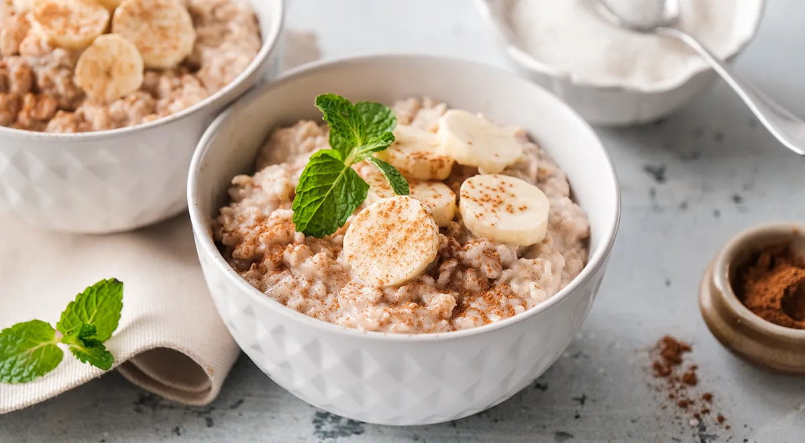
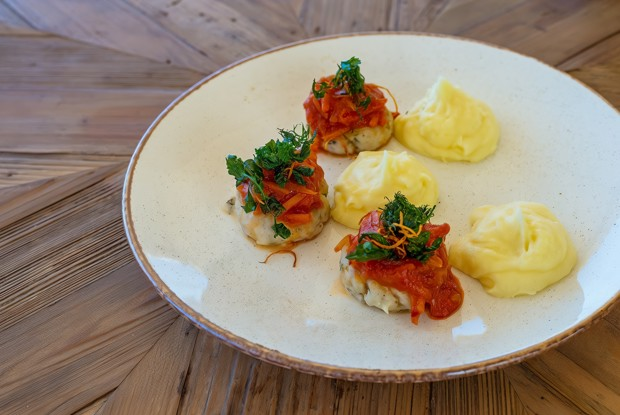
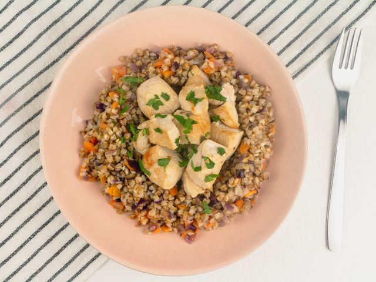
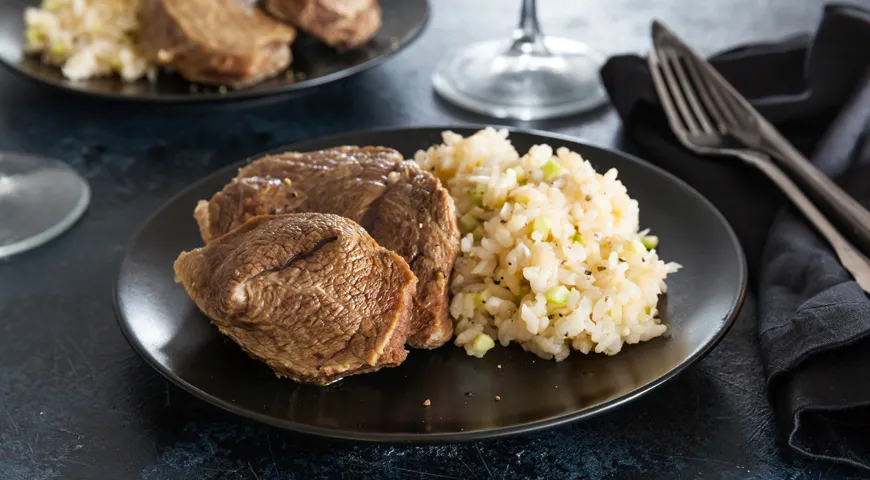
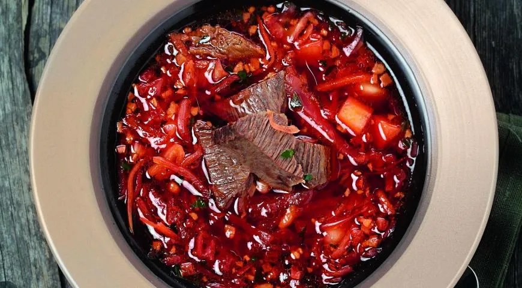

| Название блюда | Оценка от 1 до 10 | Ссылка на рецепт | Фото блюда |
|---|---|---|---|
| Овсяная каша на кокосовом молоке | 7 баллов | Ссылка на сайт с рецептом |  |
| Деликатные котлетки из индейки с лечо и картофельным пюре | 9 баллов | Ссылка на сайт с рецептом |  |
| Гречка в сливках с овощами и индейкой | 10 баллов | Ссылка на сайт с рецептом |  |
| Отварная говядина с рисовым гарниром | 9 баллов | Ссылка на сайт с рецептом |  |
| Классический борщ с говядиной | 9 баллов | Ссылка на сайт с рецептом |  |